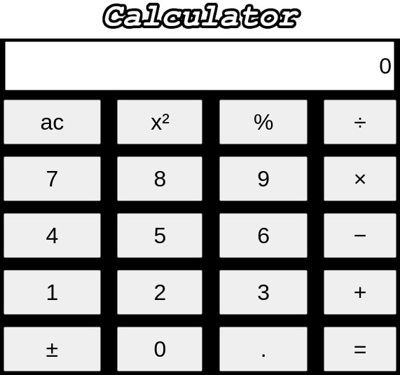
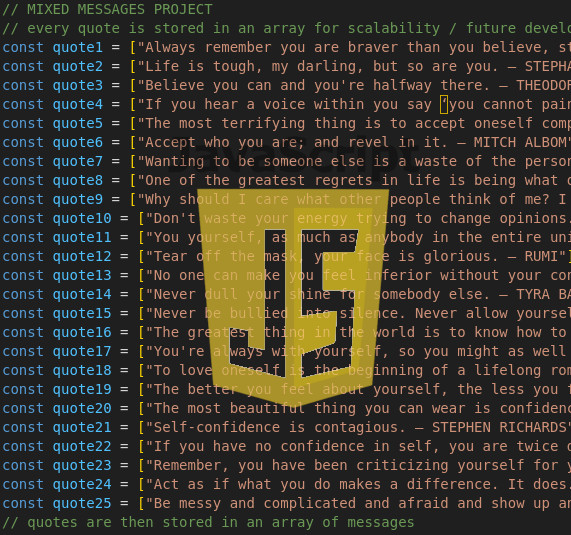

Bio
Hi! My name is DARIO!

My journey has taken me from the world of IT to the world of healthcare, and now I'm excited to combine these experiences in a new career in web development. Born in Italy (1983) and now based in Somerset, I've had a lifelong passion for technology, starting with a Commodore 128 at age 4. After graduating from a computer science high school/college, I spent nine years (2001-2010) working in IT in Rome, supporting a wide range of clients. In my 30s, I pursued a career in nursing, moving to England in 2016. This experience instilled in me strong communication, problem-solving, and empathy - skills that are invaluable in creating user-centered web applications. Currently, I'm dedicated to expanding my technical skills through an online web development course, building a portfolio of projects that showcase my abilities (see below). I'm seeking a challenging and rewarding role where I can apply my diverse background and contribute to innovative projects. In my free time, I enjoy music (I play bass guitar in a band), staying active at the gym and in the surf, exploring nature, and traveling.
Projects
Calculator
During my web development course, the calculator project was one of my first significant challenges. This project involved using HTML, CSS, and JavaScript to create a web application that not only visually resembled a traditional calculator but also functioned like one. We focused on replicating the core functionality, including basic arithmetic operations (addition, subtraction, multiplication, and division), clear/reset functionality, and potentially more advanced features like handling decimals and order of operations. Building this project helped solidify my understanding of front-end development principles and how these three languages work together to create interactive web experiences.
core skills: HTML, CSS and , Javascript
Mixed message generator
This project, a mixed message generator, was an early challenge in my web development learning journey. The goal was to create a JavaScript program that would output a different, randomly generated message each time it was executed. This involved using core JavaScript syntax and programming concepts to construct the messages and select random elements from them. Beyond the JavaScript itself, the project also required using Git for version control, interacting with the command line, and developing the program locally on my computer. This experience provided valuable practice in essential developer workflows and reinforced my understanding of fundamental JavaScript principles.
core skills: Javascript, Git and GitHub, command line